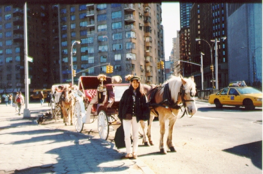

Columbus Circle (Broadway) (96.3)
in front of a carriage horse

| First time to see a carriage horse! It is a good contrast between modern New York City and country horses(^^). |

=at Columbus Circle(96.3)=
[English home]
| First time to see a carriage horse! It is a good contrast between modern New York City and country horses(^^). |